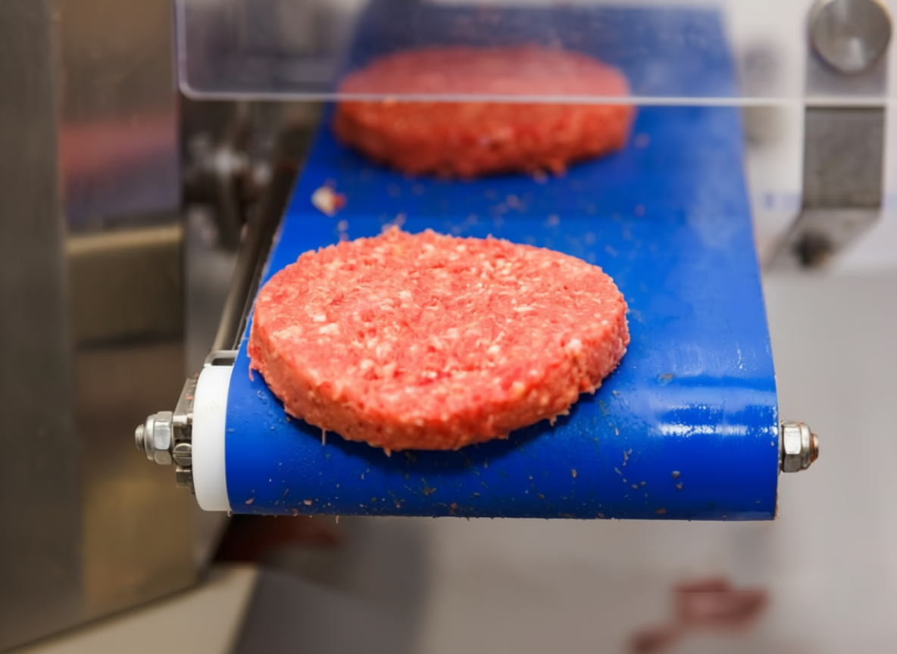
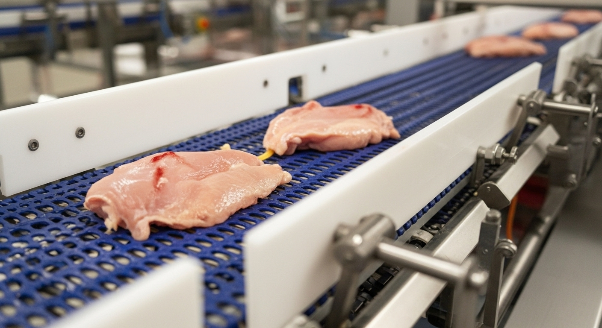
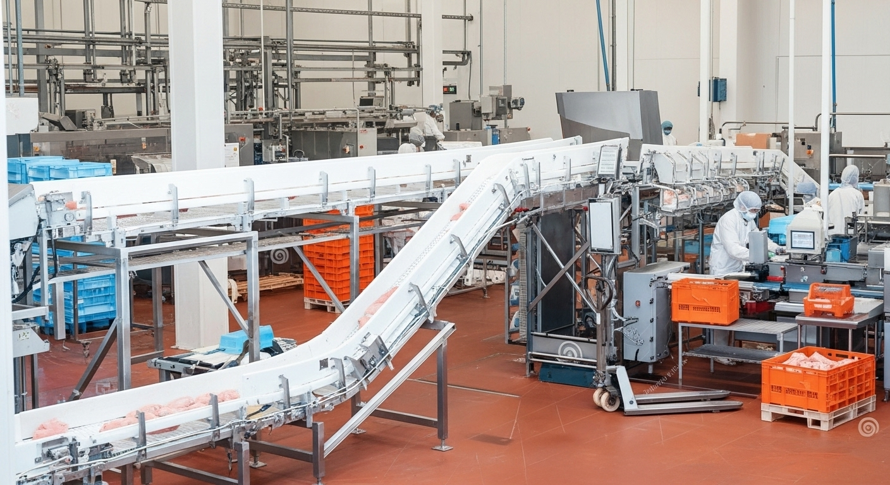
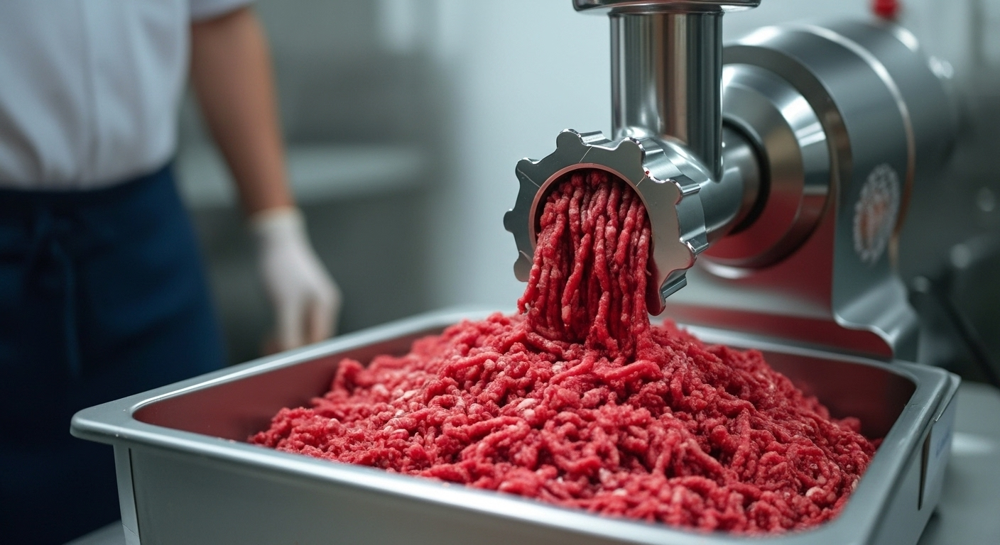
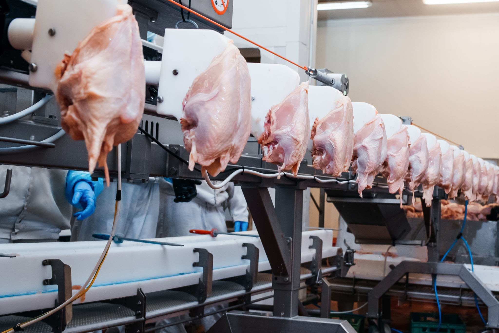

Your Strategic Partner for Food Production Equipment
Brothers Steel Engineering is our strategic partner for designing and manufacturing food production equipment. Through this partnership, we offer our clients a wide range of production lines and industrial machines tailored to their specific needs.
- Local Manufacturing by Expert Engineers
- European Standards Compliance
- Comprehensive Production Solutions
معدات متكاملة لكل مرحلة من مراحل الإنتاج
جميع معدات Brothers Steel مصنوعة من خامات استانلس ستيل 304 الغذائي لضمان متانة فائقة ومستويات نظافة صحية عالية.
Mixer of Meat
آلة خلط المكونات
آلة خلط صناعية تستخدم لدمج مكونات اللحوم والتوابل بكفاءة عالية لتحقيق مزيج متجانس. مناسبة لتحضير خلطات منتجات مثل البرجر والكفتة والسجق وغيرها من اللحوم المصنعة.
- خلط متجانس ودمج فعال للمكونات المتنوعة
- مزوّدة بعمودَيْ خلط من الستانلس ستيل
- محرك قوي يضمن أداءً ثابتًا مع الكميات الكبيرة
- مثالية لمصانع إنتاج البرجر والكفتة والسجق
Tumbler of Meat
جهاز تمبلر تتبيل اللحوم
جهاز مثالي لتتبيل وتحسين نكهة وقوام اللحوم والدواجن بكفاءة، حيث يعمل بتقنية التفريغ الهوائي (Vacuum) التي تساعد على تشريب التتبيلة داخل الأنسجة بشكل متساوٍ.
- مناسب لتتبيل مختلف أحجام قطع اللحوم بعمق وسرعة
- تجهيز منتجات الدواجن مثل فيليه البانيه والاستريبس
- يعزز طعم وقوام المنتجات عبر توزيع متساوٍ للتتبيلة
Meat Dicer
كسارة تقطيع اللحوم إلى مكعبات
آلة لتقطيع اللحوم إلى مكعبات أو شرائح بسرعة ودقة عالية، مما يجعلها مثالية لخطوط الإنتاج ذات السعة الكبيرة والمطابخ الصناعية.
- شفرات فولاذية حادة لتقطيع دقيق
- محرك قوي يضمن كفاءة تشغيل مستمرة
- مصنوعة من الستانلس ستيل 304 لسلامة الغذاء
- تصميم مدمج يسهّل التنظيف والصيانة
Industrial Meat Mincer
مفرمة اللحوم الصناعية - 18 سكين
مفرمة قوية مصممة لفرم اللحوم بدقة عالية باستخدام نظام مكوّن من 18 سكينًا حادًا، مما يضمن طحنًا متجانسًا يلائم جميع تطبيقات تصنيع الأغذية.
- فرم ناعم ومتجانس بفضل 18 سكينًا
- تصميم يقلل نسبة الفاقد ويزيد سرعة الإنتاج
- ملائمة لجميع أنواع اللحوم والدواجن والأسماك
- سهلة التفكيك والتنظيف بمقاسات خاصة
Forming Machine
ماكينة التشكيل الآلي
آلة أوتوماتيكية لتشكيل المنتجات وفق قوالب محددة، تستخدم لإعطاء شكل متناسق لمنتجات مثل أقراص البرجر وفيليه الدجاج (البانيه) والناجتس وغيرها.
- قوالب قابلة للتغيير (برجر، بانيه، ناجتس)
- حجم ووزن موحّد لكل قطعة
- إمكانية دمجها ضمن خطوط الإنتاج المتكاملة
Batter Mixer
جهاز خلط خليط التغطية السائل
ماكينة متخصصة في خلط المكونات الجافة مع الماء لتحضير خليط التغطية (التمبورة) بدرجة لزوجة مثالية وثابتة.
- خلط آلي ومتجانس للحصول على قوام سلس
- نظام تنبيه أوتوماتيكي لانخفاض اللزوجة
- التصاق أفضل للبقسماط وقرمشة مميزة بعد القلي
Breading Machine
ماكينة التغليف بالبقسماط
المرحلة الأساسية في خط إنتاج الدجاج المقلي، حيث تقوم بتغليف قطع اللحوم والدواجن بطبقة متجانسة من البقسماط بشكل أوتوماتيكي وسريع.
- تغليف متساوٍ بدون فراغات
- تقليل هدر البقسماط بنسبة تصل إلى 30%
- سهلة الفك والتنظيف بين دفعات الإنتاج
- توافق تام مع باقي مراحل الخط
Drum Breader
جهاز التغطية الأسطواني بالبقسماط
جهاز تغليف يعمل بأسطوانة دوّارة لتغطية قطع اللحوم أو الدواجن بطبقة متساوية من الدقيق أو البقسماط من جميع الجهات.
- تغطية كاملة تلقائية بأقل تدخل يدوي
- مناسب لقطع متفاوتة الحجم والأشكال
- تحكم في سرعة الدوران لتزامن مع خط الإنتاج
Deep Fryer
القلاية الصناعية الأوتوماتيكية
قلاية صناعية أوتوماتيكية مصممة لتقديم أداء عالي في قلي المنتجات المغلفة مثل البانيه والاستريبس والناجتس والأسماك.
- توزيع حراري متساوٍ لنضج متوازن
- تقنية تقلل امتصاص الزيت مع الحفاظ على القرمشة
- موفرة في استهلاك الزيت بنظام ترشيح مدمج
- متوافقة مع خطوط الإنتاج الأوتوماتيكية
- تصميم يركز على السلامة وسهولة الصيانة
Continuous Oil Filter
فلتر الزيت المستمر
وحدة ترشيح ضرورية في خطوط القلي الصناعية، صُممت للمحافظة على جودة زيت القلي وإطالة عمره من خلال إزالة الشوائب وبقايا الطعام بشكل مستمر.
- يقلل استهلاك الزيت بنسبة تصل إلى 40%
- يحسّن جودة القلي ويحافظ على نكهة المنتج
- تصميم سهل الفك والتنظيف
- قابل للتصنيع بمقاسات مختلفة
Pastrami Press
مكبس البسطرمة
جهاز مخصص لكبس اللحوم المتبلة (مثل البسطرمة) بعد مرحلة التتبيل، بهدف تفريغ الهواء منها، وتوحيد شكلها، وضمان نضج متساوٍ.
- ضغط متوازن لشكل نهائي متجانس
- تصريف السوائل الزائدة وتحسين التجفيف
- مناسب للبسطرمة واللانشون واللحوم المتبلة
- مقاسات مختلفة حسب حجم الإنتاج
- مصنوع من ستانلس ستيل آمن غذائياً
Conveyor Belts
السيور الناقلة
سيور ناقلة مصممة لنقل المنتجات بين مختلف مراحل الإنتاج بسرعة وانتظام، مما يرفع كفاءة الخط الإنتاجي ويخفض الاعتماد على النقل اليدوي.
- نقل سلس بين مراحل التصنيع المختلفة
- مصنوعة من استانلس ستيل 304 آمنة غذائياً
- نظام تحكم في السرعة (إنفرتر)
- تصميم مرن يتكيف مع مساحة المصنع
Stainless Steel Tanks
خزانات ستانلس ستيل
خزانات مصنوعة من الفولاذ غير القابل للصدأ لتخزين المواد الخام أو المنتجات السائلة أو الصلبة. متوفرة بسعات من 100 لتر إلى 20,000 لتر.
- تصنيع عالي الجودة بدون تفاعل أو تلوث
- هيكل متين يتحمل الظروف الصناعية الصعبة
- تصاميم خاصة حسب مساحة ومتطلبات المصنع
Stainless Accessories
إكسسوارات استانلس ستيل
مجموعة من الملحقات والتجهيزات المصنّعة من الستانلس ستيل تشمل حِلَل الخدمة الكبيرة، وأحواض الغسيل والتتبيل، والطاولات، والعربات المتحركة وغيرها.
- جودة تصنيع فائقة للاستخدام الغذائي
- تصميمات متنوعة (حلل، أحواض، طاولات، تروليات)
- إمكانية تصنيع أي قياس أو شكل خاص وفق المتطلبات
Waste & Storage Silos
صوامع التخزين ومخلفات الإنتاج
صوامع رأسية من الستانلس ستيل لتخزين المواد الخام أو المنتجات الوسيطة أو النهائية، وتجميع المخلفات العضوية بشكل آمن.
- متعددة الاستخدامات: خام، تحت التصنيع، نهائية
- جمع المخلفات الصناعية والسوائل بطرق آمنة
- استانلس ستيل 304 سهلة التنظيف والصيانة
- بناء قوي يتحمل الأحمال الثقيلة
- تساهم في الحفاظ على البيئة وتقليل الفاقد
Features of Brothers Steel Equipment





.jpeg)
We Support Multiple Factories in Food Industry
Meat and Poultry Factories
Integrated lines for processing, forming, and packaging meat and poultry products.
Ready Meal Factories
Integrated systems combining cooking, cooling, and packaging.
Sauce and Seasoning Factories
Processing equipment for liquid sauces and dry seasonings.
Flavor Manufacturing
Controlled setups for concentrates and flavor bases.
Hospitality and Catering
Industrial kitchen setups optimized for large-scale service.
Cold Chain
Custom freezing tunnels and refrigerated storage for product stability.
Ready to Start Your Food Manufacturing Project?
Let's transform your vision into a thriving production facility. Contact our team today for a consultation.